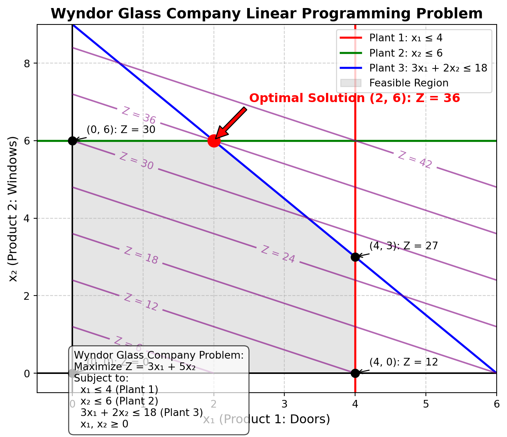

Code
import matplotlib.pyplot as plt
import numpy as np
# Create a new figure with a specific size for better visibility
plt.figure(figsize=(7, 6))
# Define the range for x and y axes
x_range = np.linspace(0, 6, 100)
y_range = np.linspace(0, 9, 100)
# Create a meshgrid for contour plotting
X, Y = np.meshgrid(x_range, y_range)
Z = 3 * X + 5 * Y # Objective function: 3x₁ + 5x₂
# Plot the constraints
# Constraint 1: x₁ ≤ 4 (Plant 1)
plt.axvline(x=4, color='red', linestyle='-', linewidth=2, label='Plant 1: x₁ ≤ 4')
# Constraint 2: x₂ ≤ 6 (Plant 2)
plt.axhline(y=6, color='green', linestyle='-', linewidth=2, label='Plant 2: x₂ ≤ 6')
# Constraint 3: 3x₁ + 2x₂ ≤ 18 (Plant 3)
# Convert to y = mx + b form: y ≤ (18 - 3x₁)/2 = 9 - 1.5x₁
constraint3_y = lambda x: (18 - 3 * x) / 2
plt.plot(x_range, [constraint3_y(x) for x in x_range], 'blue',
linestyle='-', linewidth=2, label='Plant 3: 3x₁ + 2x₂ ≤ 18')
# Non-negativity constraints
plt.axhline(y=0, color='black', linestyle='-', linewidth=1.5)
plt.axvline(x=0, color='black', linestyle='-', linewidth=1.5)
# Define the vertices of the feasible region
feasible_region_x = [0, 0, 2, 4, 4]
feasible_region_y = [0, 6, 6, 3, 0]
# Shade the feasible region
plt.fill(feasible_region_x, feasible_region_y, color='gray', alpha=0.2, label='Feasible Region')
# Create contours for the objective function
contour_levels = np.arange(0, 45, 6) # Levels at 0, 6, 12, 18, 24, 30, 36, 42
contour = plt.contour(X, Y, Z, levels=contour_levels, colors='purple', alpha=0.6)
plt.clabel(contour, inline=True, fontsize=10, fmt='Z = %1.0f')
# Mark the corner points of the feasible region and evaluate the objective function at each
corner_points = [(0, 0), (0, 6), (2, 6), (4, 3), (4, 0)]
corner_values = [3*x + 5*y for x, y in corner_points]
for i, point in enumerate(corner_points):
x, y = point
value = corner_values[i]
plt.plot(x, y, 'ko', markersize=8) # Black dots for corner points
# Add labels for each corner point with its coordinates and objective value
if point != (2, 6): # Skip the optimal point as we'll label it differently
plt.annotate(f'({x}, {y}): Z = {value}',
xy=point, xytext=(x+0.2, y+0.2),
fontsize=10, arrowprops=dict(arrowstyle='->'))
# Highlight the optimal solution
plt.plot(2, 6, 'ro', markersize=12) # Red dot for optimal solution
plt.annotate(f'Optimal Solution (2, 6): Z = 36',
xy=(2, 6), xytext=(2.5, 7),
fontsize=12, fontweight='bold', color='red',
arrowprops=dict(facecolor='red', shrink=0.05))
# Add axis labels and a title
plt.xlabel('x₁ (Product 1: Doors)', fontsize=12)
plt.ylabel('x₂ (Product 2: Windows)', fontsize=12)
plt.title('Wyndor Glass Company Linear Programming Problem', fontsize=14, fontweight='bold')
# Set the axis limits with some margin
plt.xlim(-0.5, 6)
plt.ylim(-0.5, 9)
# Add a grid for better readability
plt.grid(True, linestyle='--', alpha=0.6)
# Add a legend
plt.legend(loc='upper right', fontsize=10)
# Add a text box explaining the problem
textbox_text = (
"Wyndor Glass Company Problem:\n"
"Maximize Z = 3x₁ + 5x₂\n"
"Subject to:\n"
" x₁ ≤ 4 (Plant 1)\n"
" x₂ ≤ 6 (Plant 2)\n"
" 3x₁ + 2x₂ ≤ 18 (Plant 3)\n"
" x₁, x₂ ≥ 0"
)
plt.figtext(0.15, 0.02, textbox_text, fontsize=10,
bbox=dict(facecolor='white', alpha=0.7, boxstyle='round,pad=0.5'))
# Make the layout tight
plt.tight_layout()
plt.show()